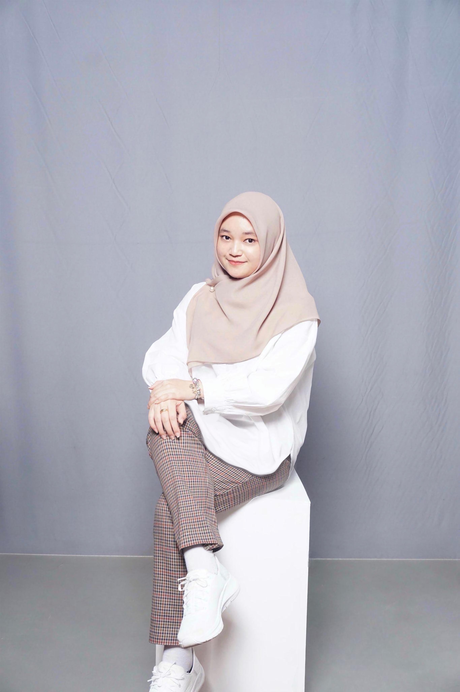

BIODATA DIRI
Identitas

Nama Lengkap
: Nayla Apriliandita
Tempat, Tanggal Lahir
: Jakarta, 15 April 2005
Email
: zditay54c@gmail.com
Pendidikan
2012 - 2017
SD Negeri Kompleks IKIP 1 Makassar
2017 - 2020
SMP Islam Athirah 1 Makassar
2020 - 2023
SMA Negeri 2 Makassar
2023 - Sekarang
Universitas Hasanuddin
Pengalaman
Feb 2025 - Juli 2025
OCVP Finance Heroes For Life 9.0 by AIESEC in UNHAS
Jan 2025 - April 2025
Event Committee Red Campus Futurist Informatics Competition 1.0
Aug 2024 - Jan 2024
OC Program Growth+ 6.0 by AIESEC in UNHAS
Juli 2024 - Nov 2024
Event Committee Coder Institute Seminar
Feb 2024 - Juli 2024
OC Program Greeneration 16.0 by AIESEC in UNHAS
Des 2023 - Jan 2024
Participant of I-Learn 10.0 by AIESEC in UNHAS
Keahilan
Kerja Sama
Manajemen Waktu
Manajemen Proyek
Perencanaan Anggaran